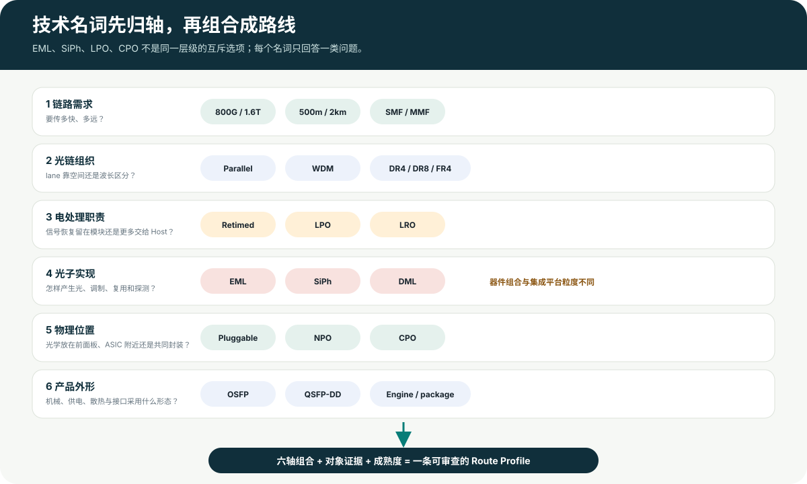

稳定分类框架先归轴，再谈路线优劣
第 06 章 · 认识技术选项
行业里的英文名词，其实在回答不同问题
读到这里再看技术名词就容易得多：有的描述光纤怎么组织，有的描述模块保留多少信号处理，有的描述用什么材料和器件处理光，还有的描述光学部分放在哪里。它们不是一组选一个的同类选项。

参考图 3 · EML、SiPh、LPO、CPO 必须先放回各自选择轴，再组合成路线。点击查看原图。
1链路需求：要传多快、多远
先把任务说清楚：一只端口总共搬多少数据，拆成几条电/光 lane，每条多快，要跨越多远，走哪种光纤，错误由谁纠正。
400G / 800G / 1.6T100m / 500m / 2kmSMF / MMF
用一个 800G 例子展开这六个问题 →光链路组织：并行还是波分
决定使用多根并行光纤，还是让多个波长共享光纤；DR8、DR4、FR4 等名称要放回具体标准解释。
ParallelWDMDR8 / DR4 / FR4
电职责：模块处理多少信号恢复
决定模块中保留完整重定时、只在部分方向重定时，还是更多依赖 host SerDes。
RetimedLROLPO / Linear
光子实现：怎样发光、调制与集成
这里才出现 DML、EML、SiPh 等词。EML 是具体发射器件；SiPh 是可承载调制、复用、探测等功能的集成平台。
DMLEMLSiPhTFLN 等
光学放置：离交换 ASIC 多远
决定光学位于前面板可插拔模块、ASIC 附近，还是与 ASIC 共封装。
PluggableNPOCPO
产品形态与接口：怎样装、怎样接
在前面板可插拔路线中还要选择机械、电、热和光连接形态。
OSFPQSFP-DDMPOLC / SN
EML vs SiPh出现在光子实现层，但两者粒度并不完全相同
Retimed vs LPO/LRO出现在电职责层
Pluggable vs NPO/CPO出现在物理放置层
DR8 vs FR4出现在链路组织/PMD 层，须绑定速率和标准
因此：“EML、硅光、LPO、CPO 哪个最好”不是一个可直接回答的问题。一个真实产品完全可能同时是 SiPh + LPO + front-panel pluggable + DR8 + OSFP，这些词描述的是它的不同切面。
稳定解释骨架示例帮助理解；精确数值仍须绑定完整标准或产品
第一条选择轴展开 · Link requirements
“传多快、多远”不是一句规格，而是六个必须同时回答的问题
把它想成运输任务会更直观：总速率是每秒要搬多少货，lane 是把货分给几条车道，每 lane 速率是每条车道跑多快，距离是路有多长，光纤类型是走哪种路，BER/FEC 则规定途中允许出现多少错误、由谁负责纠正。六项合在一起，才形成一份可以选方案的链路任务书。
示例任务把 800G 数据送到 500 米外
交换 ASIC→光模块 A⇢ 500 m 单模光纤 ⇢光模块 B→另一台交换机
这句话还不够下单：800G 是端口总速率，不说明模块内部有几条 lane，也不说明这些 lane 靠多根光纤还是多个波长区分，更没有说明错误校正放在哪里。
01Total rate总速率：一只端口合计搬多少
800G描述端口汇总能力，不代表“有一颗 800G 激光器”。真实实现会把数据拆到多条电 lane 和光 lane。
02Lane countlane 数：把总任务拆成几路
lane 是一条并行数据通道。必须分别记录主机侧电 lane和光纤侧光 lane；两边可以通过 gearbox、DSP 或复用结构重新组织，不能默认数量相同。
03Per-lane rate每 lane 速率：每一路承担多少
同为 800G，可以理解为 8×约100G，也可以是 4×约200G 等组织。lane 更少会降低接口数量，但每一路更快，电与光器件带宽更难。
04Reach距离：光要在衰减和失真后仍能识别
100 m、500 m、2 km 不只是线缆长度不同。距离增加会消耗更多光功率预算，并让色散、反射和连接损耗更值得关注；不能简单理解成“换一颗更强激光器”。
05Fiber medium光纤类型：多模还是单模，几根纤芯
MMF 多模光纤常服务较短距离；SMF 单模光纤适合把高速信号送得更远。还要继续记录是一条收、一条发，还是多根并行收发光纤。
06BER & FEC误码与 FEC：允许错多少，在哪里纠错
高速链路允许出现少量原始错误。BER衡量错误比例；FEC加入冗余信息来纠错。必须分清纠错前、纠错后指标，以及 FEC 位于 Host、模块还是协议规定的其他位置。
同一个“800G、500 米、单模”任务，仍可能长成不同物理方案
共同任务800G · 500 m · SMF再叠加完整 BER/FEC、温度和损耗边界
A8 条约100G光 lane · 空间并行可形成 DR8 类组织：单 lane 压力相对较低，但收发纤芯、阵列耦合和极性管理更多。
B4 条约200G光 lane · 空间并行可形成 DR4 类组织：光 lane 和纤芯减少，但每 lane 的调制、探测与电互连带宽提高。
C4 条约200G光 lane · 波长复用可形成 FR4 类组织：多路波长共用一对光纤，同时引入合分波、波长控制与相应测试。
DR8、DR4、FR4 不能脱离完整名称使用。这里是在 800G 示例中解释组织差异；正式判断还要写明标准组织、完整规范名、版本/成熟度、reach 与 FEC。裸写“DR4”并不能唯一确定一个产品。
链路需求可以先筛掉什么不满足速率、距离、光纤和误码边界的方案
例如目标只有双工两芯布线，就不能直接采用依赖多根并行光纤的实现而不改变基础设施。
→
链路需求还不能决定什么EML 还是 SiPh、Retimed 还是 LPO、Pluggable 还是 CPO
这些属于后续不同选择轴。它们要在链路任务确定后，再结合功耗、Host 能力、封装、制造和维护要求选择。
正确阅读顺序：先得到“速率 × lane × 距离 × 光纤 × BER/FEC”的链路画像，再选择 Parallel/WDM；之后才讨论电职责、EML/SiPh、Pluggable/NPO/CPO 和产品外形。
稳定术语边界术语不能跨维度互相替代
第 06 章补充 · 名词放回正确位置
这些常见名词，分别能说明什么？
上一节建立了直观位置，这里进一步给每个术语划定边界：它能说明什么，又不能据此自动推出什么。
| 术语 | 所在轴 | 它真正回答 | 不能自动推出 |
|---|
| DR8 / FR4 | 链路规格层 | 具体标准或产品上下文中的光通道与光纤组织 | 不能单独推出速率、距离、纠错方式、外形或光子平台 |
| 重定时方案（Retimed） | 电处理层 | 模块内恢复时钟，并重新判决和发送高速电信号 | 不固定光子平台、链路规格、外形或放置位置 |
| 线性可插拔光学（LPO） | 电处理层 | 一种减少模块内复杂数字处理、更多依靠主机信号能力的可插拔方案 | 不能自动推出硅光、OSFP 外形或统一的功耗优势 |
| 线性接收光学（LRO） | 电处理层 | 发送和接收方向采用不同信号处理责任的方向性架构 | 不能简单等同“半重定时”，也不固定光子平台 |
| 直接调制激光器（DML） | 光子实现层 | 通过改变激光器本身的驱动，直接改变输出光 | 不自动推出距离、通道组织、电架构或封装 |
| 电吸收调制激光器（EML） | 光子实现层 | 典型器件由 InP 平台上的 DFB 激光器与单片集成 EAM 调制器组成 | 不回答电处理架构、摆放位置、链路规格或市场份额 |
| 硅光子平台（SiPh） | 光子实现层 | 在硅平台上集成波导、调制、复用、探测等光子功能 | 不能自动回答光源、调制器、探测器分别如何集成 |
| 可插拔 / 邻近封装 / 共封装（Pluggable / NPO / CPO） | 物理位置层 | 光学位于设备前面板、交换芯片附近，还是与交换芯片共同封装 | 不固定电处理方式，也不固定 EML 或硅光 |
| OSFP / QSFP-DD | 产品外形层 | 前面板可插拔产品的机械、散热、供电和电连接形态 | 不自动推出链路规格、光子平台或是否采用 LPO |
最关键纠偏：EML 是“发射器件组合”，SiPh 是“光子集成平台”，粒度不同；LPO 是电职责复合别名，CPO 是放置架构，维度也不同。它们不能直接排成一条互斥清单。
对象级候选三张卡分别绑定产品页或演示，不代表市场排名
Route profiles
把多个轴组合后，才得到一条完整路线
下列三张卡证明“组合方式不同”以及“成熟度不同”。它们是候选画像，不代表三条路线的市场排名。
产品页 + 规格书800G 重定时 EML 可插拔模块
Coherent FTCE4517E1PxM · 教学参考产品
链路800G，主机侧 8×106.25G，500m 单模光纤，MPO-16
电处理产品标注为 retimed；更细的内部职责未公开
光子发送使用 EML，接收使用 PIN；底层平台未公开
放置前面板可插拔 · OSFP
1.6T DR8 硅光 OSFP 演示
Coherent OFC 2025 演示对象
链路1.6T，主机侧与光侧均为 8×200G，DR8
电处理资料写明使用 3nm DSP；无法据此确定完整电架构
光子资料标注硅光平台；内部器件没有完整公开
放置前面板可插拔 · OSFP
800G DR8 LPO 硅光可插拔模块
Hyper Photonix HSO6-800-LP-P8S
链路800G，DR8，500m 单模光纤，双 MPO-12 APC
电处理产品标注 LPO；更细的内部职责没有公开
光子产品标注硅光平台；内部器件没有完整公开
放置前面板可插拔 · OSFP112
老路线迁移为一条深度分支800G DR8 × LPO × SiPh × front-panel pluggable
下面不再重复讲所有基础组件，而是沿这条具体路线回答：为什么考虑 LPO、为什么考虑 SiPh、优势与代价是什么、物理和制造环节怎么变化、哪些公司证据已经走到哪一步。
链路边界 DR8 → 电职责 LPO → 光子平台 SiPh → 放置 front-panel pluggable → 物理变化 / 公司角色 / 采用阶段
机理候选解释相对价值变化，不宣称唯一最优路线
Causal bridge · 约束到路线
技术路线不是凭空出现：它们分别响应不同约束
同一个“提速压力”可以有多种解决方法。一条完整 WHY 必须写成：需求和边界 → 工程约束 → 技术选择相对价值提高 → 组件/连接/工序改变 → 得到优势并产生新代价。
| 上游问题 | 候选响应 | 为什么可能有效 | 新增代价/前提 |
|---|
| 电通道余量不足 | Retimed / 更强 DSP | 在模块内恢复和重新发送信号，提高对 host channel 的容忍 | 模块功耗、时延、成本与散热压力 |
| 模块 DSP 功耗过高 | LPO / LRO | 减少模块内部分数字处理路径 | 要求 capable host、联合均衡、管理和端到端验证 |
| 多通道集成与尺寸压力 | SiPh / 集成 PIC | 把调制、波导、复用、耦合或探测中的多项功能集成 | 光源集成、耦合、封装、良率和平台成熟度 |
| 高速电路径需要缩短 | NPO / CPO | 把光引擎靠近交换 ASIC，缩短高损耗电互连 | 可服务性、热耦合、封装复杂度和生态改变 |
| 可维护与供应链灵活性 | Front-panel pluggable | 模块可独立更换，网络设备与光学升级解耦 | 较长 C2M 电路径和面板功率密度 |
具体分支：为什么会把 LPO 与 SiPh 组合在一起观察
规范与机理支持支路 A：为什么考虑 linear / LPO
当 host ASIC 已具备足够的均衡能力，并允许 host-module 联合配置和端到端 BER/FEC 验证时，模块内 DSP/retimer 的相对价值可能下降。
模块功耗 / 时延 / 成本目标 + capable host → LPO 进入候选
条件性假设支路 B：为什么考虑 SiPh
如果项目优先多通道 PIC 集成、晶圆级测试与筛选，以及已有量产平台经验，具备这些能力的 SiPh 平台相对价值提高。
多通道 PIC + wafer test / KGD + 平台成熟度 → SiPh 进入候选池
不能连跳：低功耗目标不能直接推出 LPO；LPO 不能直接推出 SiPh；SiPh 也不能推出某家公司已经供货。每一步都需要独立证据。
机理与产品观察缺受控比较
Trade-offs
这条路线可能得到什么，又把责任移到哪里
优势必须与代价同时出现。下面区分工程机理、组织陈述和当前缺口；没有同条件数据时，不写确定幅度。
模块功耗机制
去掉模块信号路径 DSP/retimer，减少一条模块内数字处理与耗电路径。
工程机理不等于系统总功耗必然下降，也没有合格幅度。
时延
减少模块数字决策与 retiming 路径，被规范组织描述为降低 module-path latency。
组织陈述没有同条件 ns 数据，不推出端到端时延。
成本
去 DSP 被描述为 lower-cost target，但模块 BOM 只是系统成本的一部分。
设计目标缺 BOM、ASP、良率和 host 侧成本边界。
Host 责任
FEC、均衡、channel-loss 配置和闭环验证承担更多端到端责任。
规范支持不是“所有 DSP 功能都转移到 host”。
启动与训练
传统电通道 link training 不能直接照搬，driver/TIA AGC 带来新的配置问题。
规范支持具体启动优化方法不在当前规范范围内。
测试耦合
验证需要覆盖 stressed input、host-to-host BER/FEC 和通道校准等联合场景。
规范支持不能据此推出测试时间或设备价值量必然上升。
LPO SiPh 产品观察Hyper Photonix 800G DR8 listing：≤9 W
不可归因比较
Retimed EML 基线观察Coherent 800G DR8 OSFP：<17 W
两个上限不能直接相减：供应商、光子平台、连接器、温度与内部实现没有控制一致，差值不能全部归因于 LPO。
影响链候选能力存在不等于目标产品采用
Physical consequences
路线选择如何改变组件、接口、制造、设备和测试
这部分把老路线重新挂回物理知识体系：不是再背一遍 BOM，而是看技术选择带来了哪些增量变化。
保留移除新增责任转移对象内未知
Retimed → LPO
模块内重定时Driver / TIA高速 DSP / retimer光电转换
基线模块在高速数据路径中恢复、判决并重新发送信号。 →
线性可插拔Driver / TIAFEC / 均衡 / 验证更多依赖 Host系统净功耗
减少模块内数字路径，不等于取消所有均衡、管理、校准或诊断。 Parallel → WDM
空间区分四条 lane4 Tx + 4 Rx lane光谱合分波4 Tx + 4 Rx active fibers
复杂度落在纤芯位置、极性、lane mapping 与阵列耦合。 →
波长区分四条 lane4 Tx + 4 Rx lane合波 / 分波功能1 Tx + 1 Rx fiberAWG / TFF / 片上 mux / TEC
WDM 没有消灭 lane，而是把空间管理责任转成光谱管理责任。 Pluggable → NPO/CPO
前面板独立模块可独立更换较长 C2M 电路径设备与光学升级解耦
维护边界清晰，但面板功率密度与高速电损耗成为压力。 →
光引擎靠近交换 ASIC长高速电路径共同封装与热耦合焊接 / 插座 / FRU维护边界重画
NPO/CPO 不自动决定是否 LPO、是否硅光，也不自动决定可现场更换。
组件变化
电职责变化有架构证据；目标产品观察到 SiPh 平台，但其内部光源、调制器、探测器与供应商仍未知。
已支持模块信号路径不使用 DSP/retimer；host 承担更多 FEC/equalization；模块仍有 driver/TIA 与 Tx equalization。
仍未知内部 laser、modulator、detector、PIC 供应商和集成关系。
接口与管理变化
Host 与 module 不只传高速信号，还需要表达通道损耗、均衡和非线性补偿参数。
电接口LEI-800G-PAM4-8；0–16 dB host-loss class。
管理接口CTLE/equalization、host-channel-loss、可选 NLC 参数。
光接口8 lanes、53.125 GBd PAM4、1310 nm、0.5–500 m SMF。
产品形态OSFP/QSFP-DD/MPO 是本例观察，不是 LPO 必然值。
制造工序变化
可以观察到 SiPh 平台相关的晶圆级筛选、激光耦合和先进键合方向，但没有目标产线与 retimed/EML 基线的逐工序对照。
能力观察Intel wafer-scale test / burn-in / KGD；Credo/DustPhotonics L3C；猎奇先进键合研发。
不可外推不能证明目标模块采用这些流程，也不能说它们取消主动耦合、老化或其他通用步骤。
生产与测试设备变化
设备公司披露可以证明能力存在，不能自动证明进入目标产品产线。
设备组成观察测试机、耦合模组、探针台、晶圆上下料机，以及 optical/DC/RF probes。
关键缺口没有 target-vs-baseline 的设备净增删、CAPEX、节拍、良率或单位成本表。
测试责任变化
这是当前证据相对完整的一层，规范直接定义了 host-module 联合验证对象。
发射与接收TP1a/TP4、EECQ、reference equalizer、stressed input。
系统链路高/低损通道校准、crosstalk、host-to-host BER/error statistics、FEC tail margin。